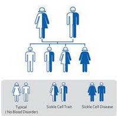

BUI控件的继承

导引
欢迎使用BUI！在这一章节里，我们将学习以下内容:
- BUI的继承体系
- 如何通过继承实现一个控件
- 如何通过实现扩展
- 难度：初级
- 版本：1.0
BUI的继承体系
在前面的章节里已经介绍过BUI的继承，本章进行更详细的介绍，我们依然从最顶层的类开始：

实现继承
- BUI的所有的UI控件都是从Controller类开始的，如果需要进行DOM操作，那么就需要实现View类
- 大量的共性的功能，在BUI中实现成了Mixin,如果在Mixin需要操作DOM也需要实现对应的View类
上面是一个简单的示例，说明了类继承过程中需要实现的步骤：
- 通过继承声明类，通过父类的
extend方法 - 声明类的属性,设置默认值
- 创建属性对应的函数，当属性值发生改变时执行
- 创建指定View类
- 根据需要创建控件生命周期中的方法
使用mixin
下面的示例我们提供了一个使用mixin的方式
这个示例实现了一个可拖拽的控件，通过BUI中提供的几个扩展，非常容易的实现了效果，这几个扩展在后面章节中会详细的介绍，有的扩展有对应的View类，所以我们需要在对应的View类中引入
下一步学习
学完本章后，你可以继续学习子控件管理更深入的了解如何组织控件